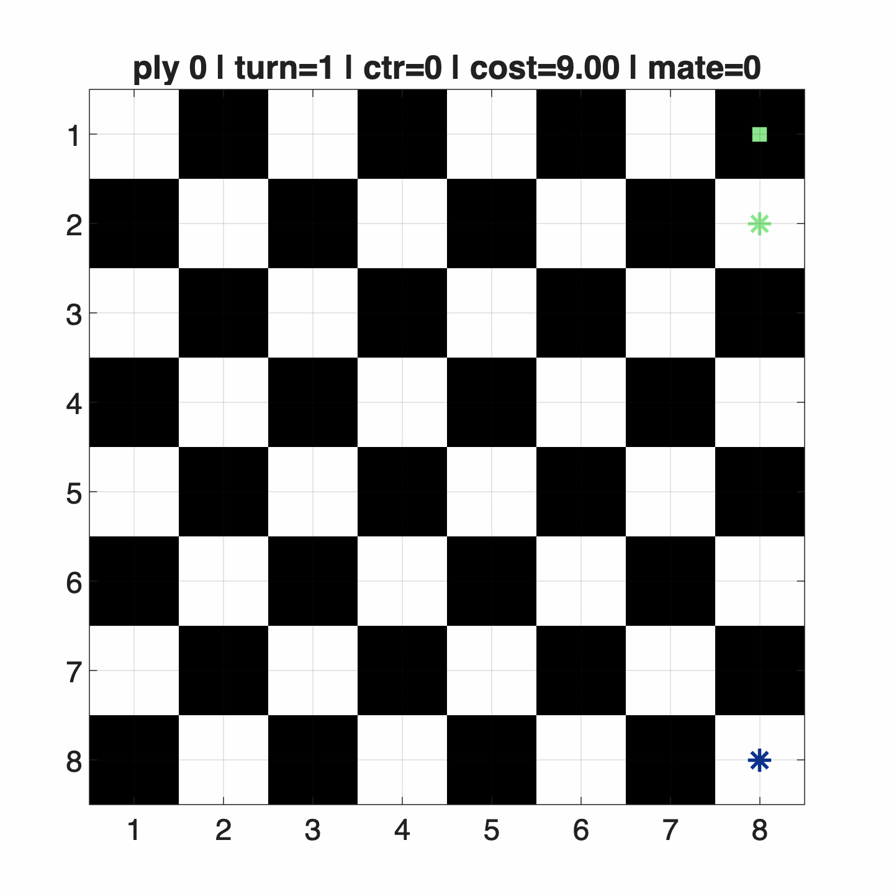
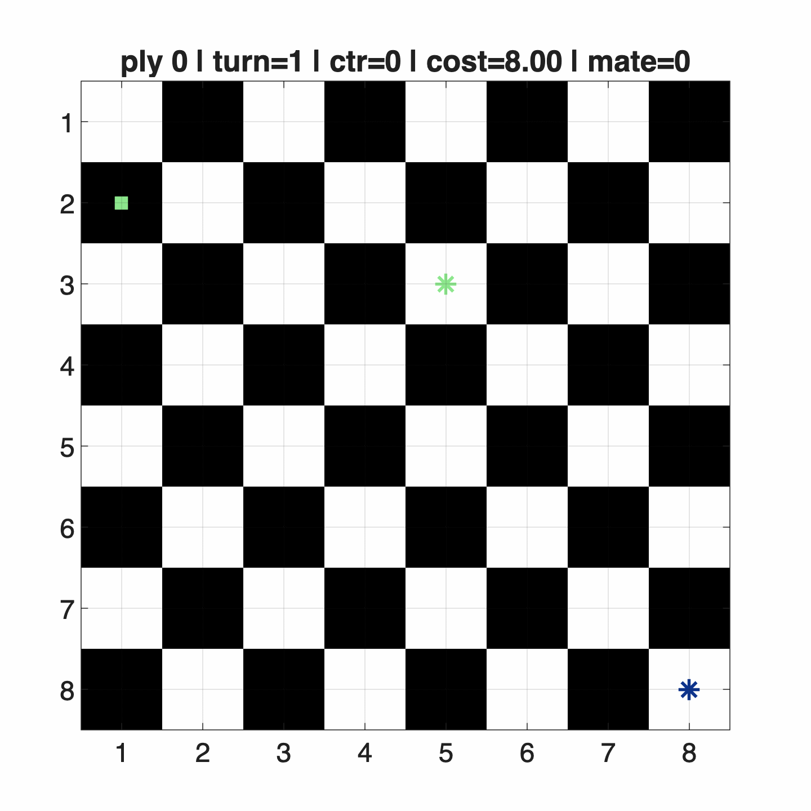
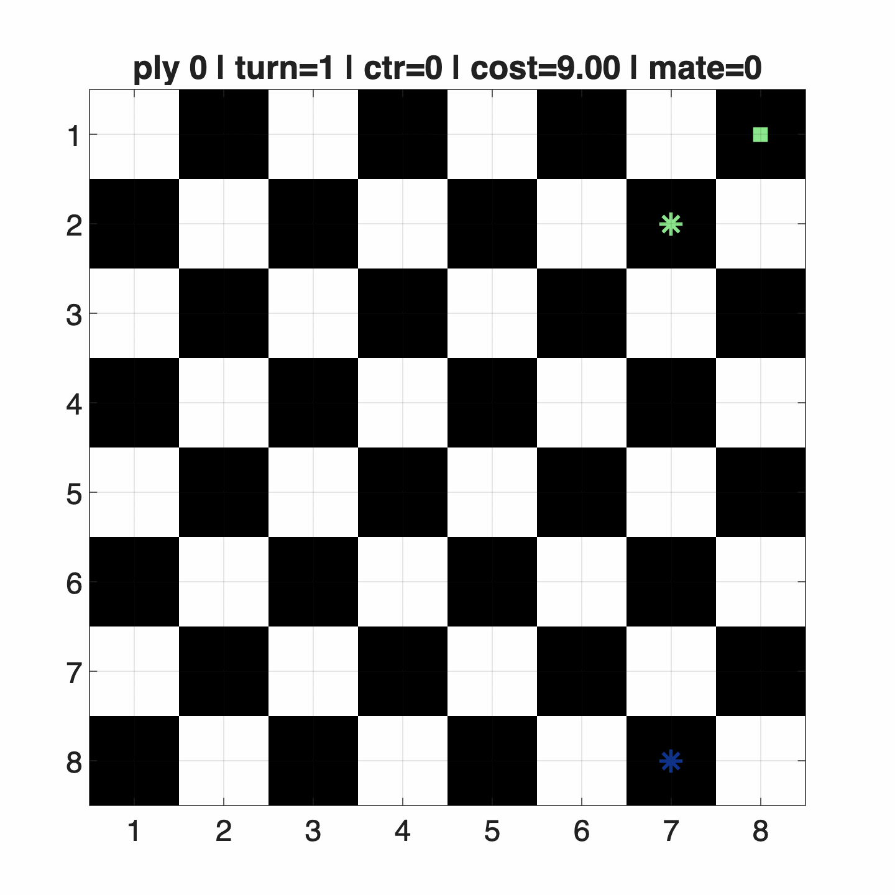
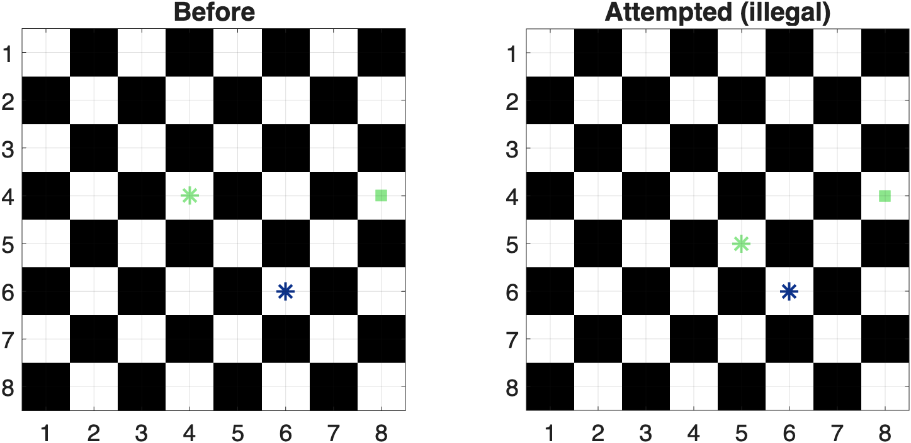
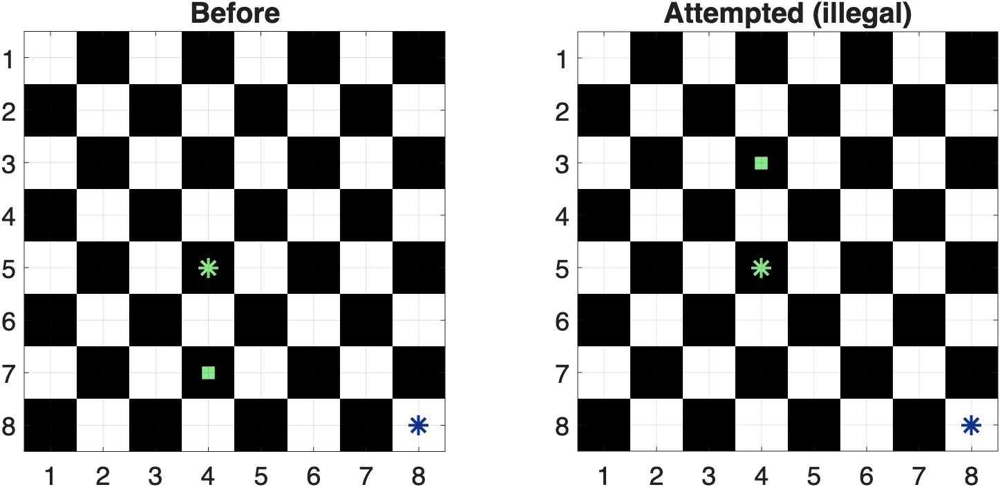
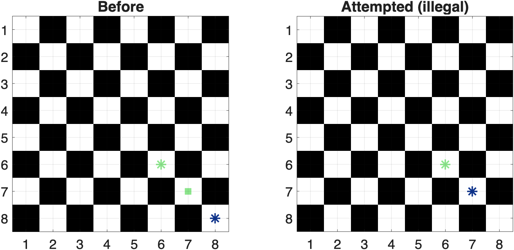
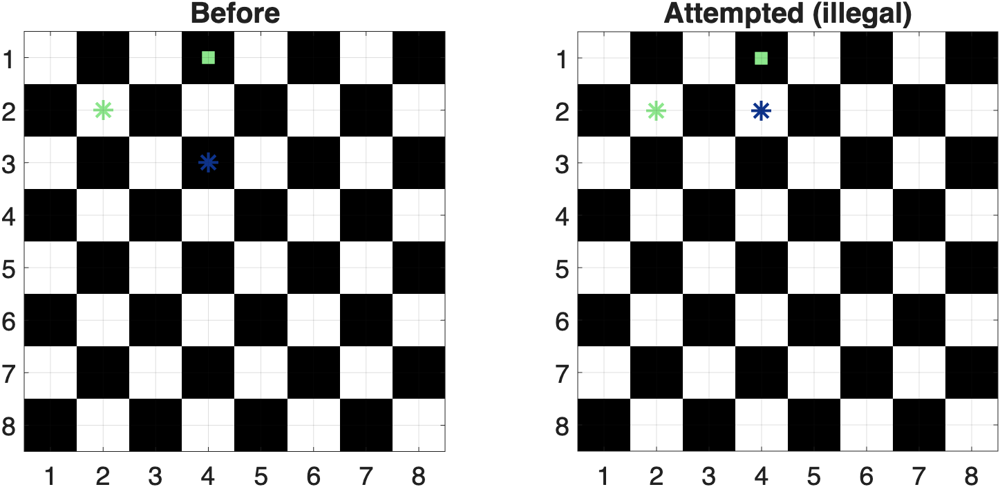

Dodge Stalemate

Click to open GIF
Final project for ECE 270 (Game Theory) taught by Joao P. Hespanha, following the modeling style from his textbook Noncooperative Game Theory: An Introduction for Engineers and Computer Scientists. The KRK endgame is treated as a finite, sequential, zero-sum game with adversarial best response at every move.

Click to open GIF

Click to open GIF

Click to open GIF




Slides from the final class presentation: formulation, legality model, minimax/alpha-beta/memoization design, and rollout examples.